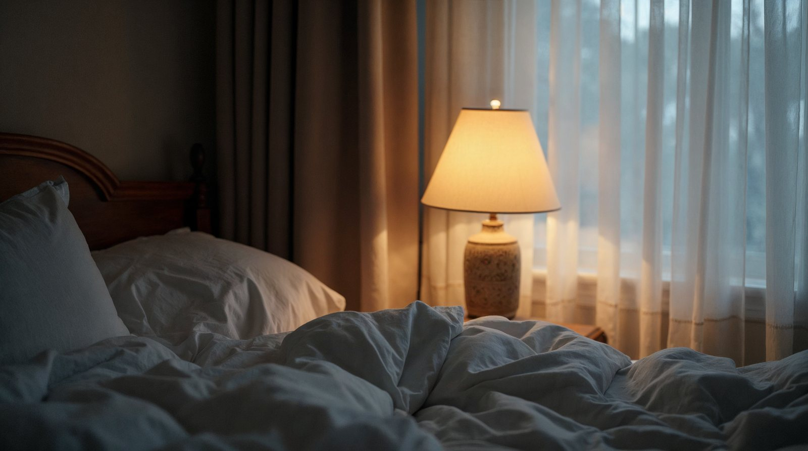
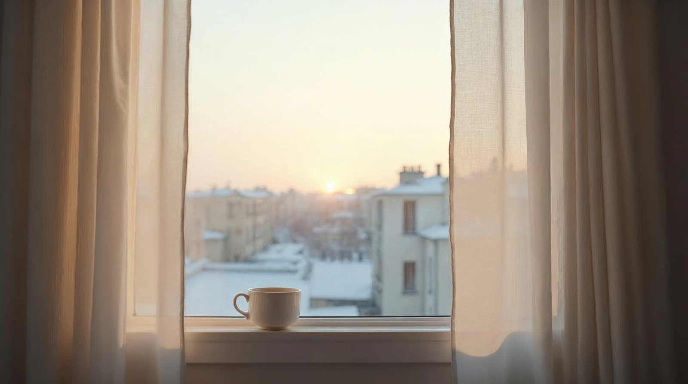
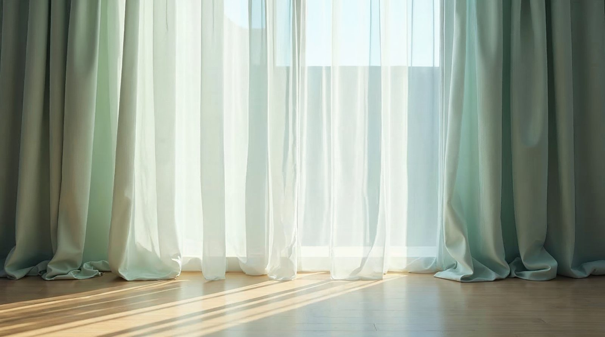
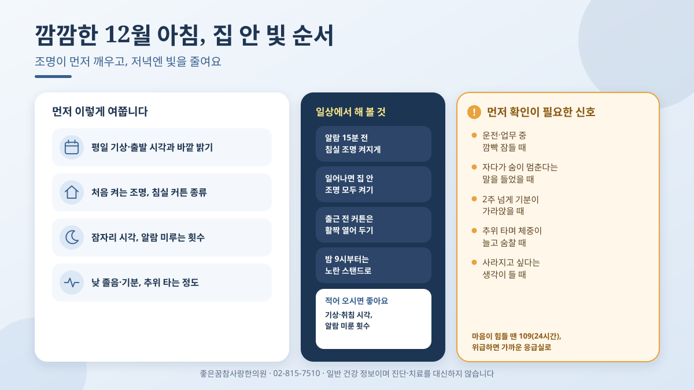

이종호 한의사 감수좋은꿈참사랑한의원 대표원장 (한의사 면허번호 19769)발행 2026-11-27 · 수정 2026-11-27
이 글의 차례
12월 서울은 해가 아침 7시 20분에서 7시 45분 무렵에야 뜹니다. 6시 반쯤 일어나 7시 전에 집을 나서는 직장인이라면 알람이 울리는 순간부터 현관을 나설 때까지 바깥은 내내 깜깜합니다.
몸속 시계는 눈으로 들어오는 아침 빛을 '하루가 시작됐다'는 가장 중요한 신호로 삼는데, 이 신호 없이 어둑한 방에서 일어나면 몸은 아직 밤이라고 여겨 이불 밖으로 나오기가 유난히 힘들고, 출근길 내내 머리가 멍하기 쉽습니다. 해를 기다릴 수 없다면 집 안 조명으로 아침을 만들어 주는 것이 첫 순서입니다.
기상 직후 30분 동안 밝고 하얀 빛을 충분히 받고, 커튼은 해가 뜰 무렵 빛이 들어오도록 정리하며, 저녁에는 거꾸로 빛을 줄여 가는 순서를 2~3주 이어 가면 아침이 한결 가벼워지는 분이 많습니다.
다만 조명을 바꾸고 잠자는 시간을 충분히 지켜도 낮 내내 졸음이 쏟아지거나, 기분이 가라앉고 아무것도 하기 싫은 날이 2주 넘게 이어진다면 빛의 문제로만 보지 말고 상담을 받아 보시는 편이 좋습니다.
왜 깜깜한 아침에는 몸이 잘 깨지 않을까요
- 몸속 시계는 하루 24시간에 딱 맞춰 돌지 않고 조금씩 늦어지려는 성질이 있습니다. 아침에 눈으로 들어오는 밝은 빛이 이 시계를 매일 앞으로 당겨 맞추는데, 12월처럼 아침 빛이 늦게 오면 시계가 제때 맞춰지지 않아 기상 시각에도 몸은 아직 밤의 상태에 머물기 쉽습니다.
- 밤 동안 잠을 돕는 호르몬(멜라토닌)은 빛을 받으면 줄어듭니다. 어두운 방에서 일어나 작은 스탠드 하나만 켜고 준비하면 이 호르몬이 아침까지 남아 졸음과 멍한 느낌이 길게 이어질 수 있습니다.
- 집 안 조명은 생각보다 어둡습니다. 거실 형광등이나 LED 아래도 흐린 겨울날 바깥보다 몇 배에서 몇십 배 어둡게 몸에 전해집니다. 그래서 "불은 켰는데 왜 안 깨지?" 하는 일이 흔합니다.
- 빛을 받는 방향도 중요합니다. 천장 조명은 머리 위에서 내려와 눈에 들어오는 양이 적고, 휴대폰 화면은 작아서 밝기에 비해 몸을 깨우는 힘이 크지 않습니다. 눈높이 근처에서 넓게 퍼지는 빛이 더 잘 전해집니다.
- 겨울에는 암막 커튼을 쳐 두는 집이 많습니다. 웃풍을 막는 데는 좋지만, 해가 뜬 뒤에도 방이 어두워 주말이나 늦게 출근하는 날 아침 빛을 놓치게 됩니다.
- 반대로 저녁에는 퇴근 뒤 밝은 거실 조명과 TV, 휴대폰 빛을 늦게까지 받습니다. 밤의 빛은 몸속 시계를 뒤로 밀어, 아침의 어둠과 겹치면 일어나는 시각과 몸의 시계 사이 간격이 점점 벌어집니다.
- 이불 밖이 추운 것도 한몫합니다. 보일러가 꺼진 새벽 방 공기가 차가우면 몸은 이불 속에 머무르려 하고, 알람을 미루는 횟수가 늘어납니다.
- 옛 의서에는 겨울 석 달은 일찍 눕고 늦게 일어나되 해가 뜨기를 기다리라는 말이 있습니다. 겨울은 기운을 안으로 갈무리하는 때라는 뜻인데, 해 뜨기 전에 집을 나서야 하는 요즘 직장인은 그만큼 일찍 눕고, 해 대신 조명으로 아침을 알려 주는 방법을 함께 써야 리듬을 지키기 쉽습니다.
빛과 리듬 때문인지, 다른 문제인지 나눠 볼까요
- 빛과 리듬 때문이라면 주말이나 휴가에 해가 뜬 뒤 일어나면 비교적 개운하고, 여름에는 같은 시각에 일어나도 덜 힘들었던 경우가 많습니다.
- 7~8시간을 자도 낮 내내 졸리고, 코를 심하게 골거나 자다가 숨이 멈춘다는 말을 듣는다면 잠자는 동안 숨길이 막히는 문제가 함께 있는지 확인이 필요합니다.
- 기분이 가라앉고 좋아하던 일에도 흥미가 없으며, 단 음식이 당기고 잠이 늘어나는 상태가 해마다 겨울에 반복된다면 계절에 따라 마음이 가라앉는 경우일 수 있어 따로 살펴봅니다.
- 추위를 유난히 많이 타고, 체중이 늘며, 피부가 건조해지고 쉽게 숨이 차다면 갑상선이나 빈혈처럼 혈액 검사로 확인할 부분이 있는지도 함께 봅니다.
- 잠드는 시각이 매일 조금씩 늦어져 새벽 2~3시에야 잠이 온다면 아침 빛만으로는 부족하고, 저녁 빛과 잠자리 시각을 함께 다시 맞춰야 합니다.

먼저 이렇게 여쭙니다
- 평일에 몇 시에 일어나고 몇 시에 집을 나서시나요? 그때 바깥은 얼마나 어두운가요?
- 일어나서 처음 켜는 조명은 무엇인가요? 침실 천장등, 스탠드, 휴대폰 화면 가운데 어느 쪽인지 여쭙니다.
- 침실 커튼은 암막인가요? 해가 뜬 뒤에도 방이 어두운 편인가요?
- 알람을 몇 번 미루시나요? 일어나서 머리가 맑아지기까지 얼마나 걸리나요?
- 잠자리에 드는 시각은 몇 시이고, 잠들기까지 얼마나 걸리나요?
- 퇴근 뒤 잠들기 전까지 주로 어떤 조명 아래에서 무엇을 하시나요?
- 주말에는 평일보다 몇 시간 늦게 일어나시나요?
- 낮에 졸리거나 오후에 기운이 뚝 떨어지는 때가 있나요?
- 요즘 기분과 입맛, 추위 타는 정도는 어떤가요? 커피는 하루 몇 잔, 몇 시까지 드시나요?

일상에서 먼저 해 볼 수 있는 것
알람 15분 전: 조명이 먼저 깨우게 하기
- 침실 조명을 시간 예약이 되는 플러그나 전구에 연결해 알람 10~15분 전에 켜지도록 맞춰 둡니다. 서서히 밝아지는 해돋이 알람 조명을 쓰는 것도 방법입니다.
- 빛이 얼굴 쪽을 비추도록 스탠드를 머리맡 옆, 눈높이 근처로 옮깁니다. 이불을 머리끝까지 덮고 자는 습관이 있다면 얼굴은 내놓고 잘 수 있게 방 온도를 조금 올려 둡니다.
- 보일러 예약을 기상 30분 전에 맞추어 이불 밖 공기를 미리 데워 둡니다. 추위가 덜하면 알람을 미루는 횟수가 줄어듭니다.
일어나서 30분: 집 안에서 가장 밝은 아침 만들기
- 알람이 울리면 침실, 거실, 주방, 욕실 조명을 한꺼번에 켭니다. 아침에는 하얀빛(주광색)이 몸을 깨우는 데 더 낫다고 알려져 있어, 아침에 주로 머무는 자리의 전구는 하얀빛으로 바꿔 둡니다.
- 아침 식사와 화장, 옷 갈아입기는 집에서 가장 밝은 자리에서 합니다. 주방 식탁 위 조명이 어둡다면 식탁 옆에 밝은 스탠드를 하나 더 둡니다.
- 휴대폰으로 뉴스나 메시지를 볼 때는 밝은 조명 아래 앉아서 봅니다. 어두운 침대에서 휴대폰만 보고 있으면 화면은 밝아도 몸은 잘 깨지 않습니다.
- 미지근한 물로 세수하고, 따뜻한 물이나 보리차를 한 컵 마십니다. 제자리에서 팔을 크게 돌리거나 기지개를 1~2분 켜면 몸의 온도가 오르며 정신이 맑아지는 데 보탬이 됩니다.
커튼은 '해 뜰 무렵'에 맞추기
- 암막 커튼은 밤의 가로등 빛과 웃풍을 막을 때만 쓰고, 출근 전에 커튼을 활짝 열어 두고 나갑니다. 해가 뜬 뒤 방에 빛이 들어오면 주말 아침이나 늦게 출근하는 날 자연스럽게 빛을 받게 됩니다.
- 가로등 빛 때문에 커튼을 닫아야 한다면 암막 커튼 안쪽에 얇은 속커튼을 함께 달고, 주말 전날 밤에는 암막 커튼을 3분의 1쯤 열어 둡니다.
- 창문 단열 뽁뽁이나 두꺼운 필름이 빛을 많이 가린다면, 침실 창 한 칸은 비워 두는 것도 방법입니다.
출근길: 해가 뜨는 시각과 만나기
- 7시 반 전후로 바깥에 있게 된다면 그때만큼은 지하 환승 통로보다 지상 길을, 버스에서는 창가 자리를 고릅니다. 동쪽 하늘이 밝아 오는 빛을 눈으로 보는 것만으로도 시계를 맞추는 데 보탬이 됩니다.
- 해가 뜨기 전에 회사에 도착한다면 오전 첫 휴식 시간에 건물 밖이나 창가에서 10분 정도 바깥 빛을 봅니다.
- 아침에는 선글라스를 쓰지 않는 편이 좋습니다. 다만 눈 질환으로 눈부심을 피하라는 안내를 받았다면 그 안내를 따릅니다.
저녁: 빛을 거꾸로 줄여 가는 순서
- 저녁 9시가 되면 거실 큰 조명을 끄고 따뜻한 색(전구색) 스탠드나 간접 조명으로 바꿉니다. 아침은 하얗고 밝게, 저녁은 노랗고 어둡게 나누는 것이 기본입니다.
- 잠자리 한 시간 전부터 TV와 휴대폰 밝기를 낮추고, 휴대폰은 침대에서 손이 닿지 않는 곳에서 충전합니다.
- 욕실 조명이 아주 밝다면 잠들기 직전 양치할 때는 세면대 쪽 작은 조명만 켭니다.
- 잠자리 시각은 기상 시각에서 거꾸로 계산해, 6시 반에 일어난다면 밤 11시 전후로 눕도록 정해 둡니다. 겨울에는 평소보다 15~30분 일찍 눕는 것도 좋습니다.
주말: 차이를 한 시간 안으로
- 토·일 아침에도 평일보다 1시간 넘게 늦게 일어나지 않도록 합니다. 부족한 잠은 오후 3시 전 20분 안쪽 낮잠으로 채웁니다.
- 주말 오전에는 해가 뜬 뒤 30분쯤 밖에 나가 걷습니다. 상도근린공원이나 한강변처럼 하늘이 트인 곳이 좋고, 바람이 찬 날은 모자와 목도리를 챙깁니다.
상황별 예시
- 예를 들어 6시에 일어나 6시 40분에 집을 나서 지하철로 출근하는 경우, 집에서 회사 도착까지 해를 한 번도 보지 못합니다. 이럴 때는 알람 15분 전 침실 조명 예약, 일어나자마자 집 안 조명 모두 켜기, 회사 도착 뒤 첫 휴식 시간 창가 10분을 묶어서 2주 동안 이어 봅니다.
- 예를 들어 부부의 기상 시각이 달라 먼저 일어나는 사람이 침실 불을 켜기 어려운 경우, 침실 대신 거실과 주방을 '아침 빛 자리'로 정합니다. 먼저 일어난 사람은 바로 침실을 나와 거실 조명을 모두 켜고 그곳에서 준비하며, 침실에는 자기 얼굴 쪽만 비추는 작은 해돋이 조명을 둡니다.
- 예를 들어 원룸이나 고시원처럼 창이 작고 북향이라 낮에도 방이 어두운 경우, 커튼을 열어도 아침 빛이 거의 들어오지 않습니다. 책상 위 밝은 스탠드 앞을 아침 식사 자리로 삼고, 노량진역이나 상도역까지 걸어가는 길은 가능하면 지상으로 다니며 하늘을 봅니다.
- 예를 들어 연말 야근으로 밤 10시가 넘어 들어오는 날이 이어지는 경우, 귀가 뒤 밝은 조명 아래 오래 있으면 잠이 더 밀립니다. 현관을 들어서면 거실 큰 조명 대신 스탠드만 켜고 씻은 뒤 바로 눕고, 다음 날 아침 기상 시각과 조명 순서는 그대로 지킵니다.
자주 하는 오해
- "불만 켜면 해가 뜬 것과 같다"고 여기기 쉽지만, 집 안 조명은 바깥 빛보다 훨씬 어둡습니다. 여러 조명을 함께 켜고 눈높이에서 빛을 받는 것이 좋습니다.
- 겨울에는 몸이 원래 잠을 많이 원하니 아침이 힘든 것은 어쩔 수 없다고 생각하기도 합니다. 겨울에 조금 일찍 눕는 것은 자연스러운 일이지만, 아침 빛을 챙기면 같은 시간을 자도 아침이 덜 무거운 경우가 많습니다.
- 주말에 몰아서 늦잠을 자면 피로가 풀린다고 여기기 쉽지만, 월요일 아침이 더 힘들어지는 원인이 되곤 합니다.
- 휴대폰 화면도 빛이니 아침에 휴대폰을 보면 잠이 깬다고 생각하는 분도 있습니다. 화면은 작아 몸 전체를 깨우기에는 부족하고, 침대에서 휴대폰을 보다 다시 잠드는 일도 흔합니다.
- 커피로 깨우면 된다고 여기기 쉽지만, 커피는 졸음을 잠시 가릴 뿐 몸속 시계를 아침으로 맞춰 주지는 못합니다.

스스로 점검해 보세요
- 평일 아침, 집을 나설 때까지 바깥이 깜깜하다.
- 일어나서 작은 스탠드나 휴대폰 화면만 켜고 준비한다.
- 침실에 암막 커튼을 치고, 주말에도 낮까지 방이 어둡다.
- 알람을 세 번 넘게 미루는 날이 많다.
- 출근길이나 오전 회의 시간까지 머리가 멍하다.
- 밤 11시 이후에도 밝은 거실 조명 아래 TV나 휴대폰을 본다.
- 주말 기상 시각이 평일보다 2시간 넘게 늦다.
한의원에서 함께 살필 수 있는 경우
- 조명과 잠자리 시각을 바꿔도 아침에 몸이 무겁고 오전 내내 멍한 날이 이어지는 경우
- 손발이 차고 추위를 많이 타며, 아침마다 몸이 굳은 듯 움직이기 힘든 경우
- 잠은 자는데 자주 깨거나 얕게 자서 개운하지 않은 경우
- 오후만 되면 기운이 뚝 떨어지고 단 음식이나 커피에 기대게 되는 경우
- 연말 업무와 모임이 겹쳐 하루 리듬이 크게 흐트러진 경우
좋은꿈참사랑한의원에서는 첫 방문 때 문진으로 평일과 주말의 기상·취침 시각, 아침에 처음 받는 빛, 저녁에 머무는 조명과 화면 시간을 먼저 여쭙고, 맥부터 짚어 봅니다. 진맥으로 몸이 얼마나 지쳐 있는지, 아침에 기운이 잘 올라오지 못하는 모습은 없는지 살피고, 혀의 색과 모양, 손발 온도, 소화와 대변, 추위 타는 정도도 함께 확인합니다.
피로와 추위 탐이 유난히 심하면 혈액 검사를 권해 드리거나 내과 진료를 함께 안내하기도 합니다. 그 뒤 아침 조명과 잠자리 순서 가운데 무엇부터 바꿔 볼지, 한의원에서는 어떤 순서로 함께 살필지를 정하고, 다음 진료에서는 지난번 말씀하신 기상 시각과 알람을 미룬 횟수, 오전의 멍한 정도를 이어서 여쭈어 비교합니다.
얼마나 지켜보고 언제 상담할까요
- 아침 조명과 커튼, 저녁 빛 줄이기를 정한 뒤 2~3주는 기록하며 지켜봅니다. 몸속 시계가 새 순서에 맞춰지는 데에는 며칠에서 몇 주가 걸립니다.
- 3주가 지나도 오전 내내 멍하고, 알람을 미루는 횟수가 줄지 않는다면 진료를 받아 함께 살펴보시길 권합니다.
- 잠자는 시간을 충분히 지키는데도 낮에 깜빡 조는 일이 잦다면 기간을 기다리지 않고 상담을 받아 보셔도 좋습니다.
- 운전 중 졸음이 쏟아지거나, 기분이 크게 가라앉아 일상이 어렵다면 지켜보지 말고 먼저 확인합니다.
이렇게 기록해 오시면 상담이 쉬워집니다
- 평일과 주말의 잠자리 시각, 잠든 것 같은 시각, 일어난 시각
- 알람을 미룬 횟수와 머리가 맑아지기까지 걸린 시간
- 일어나서 처음 켠 조명과 아침을 먹은 자리
- 바깥 빛을 본 시간(출근길, 점심, 주말 오전)
- 저녁 9시 이후 머문 조명과 화면을 본 시간
- 낮 졸음과 기분을 0~10 숫자로, 커피의 양과 마신 시각
이런 증상은 먼저 확인이 필요합니다
- 운전하거나 일하는 중에 자기도 모르게 깜빡 잠드는 경우
- 자다가 숨이 멈추거나 심하게 코를 곤다는 말을 듣고, 아침에 두통이 잦은 경우
- 스스로를 해칠 생각이 들면 ☎ 109로 바로 연락하세요.
이런 신호가 있으면 한의원보다 가까운 병원이나 응급실을 먼저 찾으세요.
관련 글
- 겨울 아침에 일어나기 유난히 힘들 때는 무엇을 살피나요?
- 저녁에 밝은 조명 아래 오래 있으면 잠이 달라질 수 있나요?
- 겨울 아침 알람을 여러 번 미루며 다시 잠들다 보면 오히려 더 멍하고 밤잠까지 늦어질 때는 어떻게 살피나요?

여쭙는 것
- 평일에 몇 시에 일어나고 몇 시에 집을 나서시나요? 그때 바깥은 얼마나 어두운가요?
- 일어나서 처음 켜는 조명은 무엇인가요? 침실 천장등, 스탠드, 휴대폰 화면 가운데…
- 침실 커튼은 암막인가요? 해가 뜬 뒤에도 방이 어두운 편인가요?
생활에서 해 볼 것
- 침실 조명을 시간 예약이 되는 플러그나 전구에 연결해 알람 10~15분 전에 켜지도…
- 빛이 얼굴 쪽을 비추도록 스탠드를 머리맡 옆, 눈높이 근처로 옮깁니다. 이불을 머리…
- 보일러 예약을 기상 30분 전에 맞추어 이불 밖 공기를 미리 데워 둡니다. 추위가…
한의원에서 함께 살필 것
- 조명과 잠자리 시각을 바꿔도 아침에 몸이 무겁고 오전 내내 멍한 날이 이어지는 경우
- 손발이 차고 추위를 많이 타며, 아침마다 몸이 굳은 듯 움직이기 힘든 경우
- 잠은 자는데 자주 깨거나 얕게 자서 개운하지 않은 경우
먼저 확인이 필요한 신호
- 운전하거나 일하는 중에 자기도 모르게 깜빡 잠드는 경우
- 자다가 숨이 멈추거나 심하게 코를 곤다는 말을 듣고, 아침에 두통이 잦은 경우
- 스스로를 해칠 생각이 들면 109로 바로 연락하세요.
한눈에 보는 표
| 구분 | 핵심 |
|---|---|
| 여쭙는 것 | 평일에 몇 시에 일어나고 몇 시에 집을 나서시나요? 그때 바깥은 얼마나 어두운가요? 일어나서 처음 켜는 조명은 무엇인가요? 침실 천장등, 스탠드, 휴대폰 화면 가운데 어느 쪽인지 여쭙니다. |
| 생활에서 해 볼 것 | 침실 조명을 시간 예약이 되는 플러그나 전구에 연결해 알람 10~15분 전에 켜지도록 맞춰 둡니다. 서서히 밝아지는 해돋이 알람 조명을 쓰는 것도 방법입니다. 빛이 얼굴 쪽을 비추도록 스탠드를 머리맡 옆, 눈높이 근처로 옮깁니다. 이불을 머리끝까지 덮고 자는 습관이 있다면 얼굴은 내놓고 잘 수 있게 방 온도를 조금 올려 둡니다. |
| 한의원에서 함께 살필 것 | 조명과 잠자리 시각을 바꿔도 아침에 몸이 무겁고 오전 내내 멍한 날이 이어지는 경우 손발이 차고 추위를 많이 타며, 아침마다 몸이 굳은 듯 움직이기 힘든 경우 |
| 먼저 확인이 필요한 신호 | 운전하거나 일하는 중에 자기도 모르게 깜빡 잠드는 경우 자다가 숨이 멈추거나 심하게 코를 곤다는 말을 듣고, 아침에 두통이 잦은 경우 |
자주 묻는 질문
해돋이 알람 조명을 꼭 사야 하나요?
꼭 그렇지는 않습니다. 시간 예약이 되는 플러그에 스탠드를 연결해 알람 10~15분 전에 켜지게 해도 되고, 일어나자마자 집 안 조명을 모두 켜는 것만으로도 시작할 수 있습니다.
아침에는 어떤 색의 조명이 좋은가요?
아침에는 하얀빛(주광색)을 밝게, 저녁에는 노란빛(전구색)을 어둡게 쓰는 편이 몸의 리듬을 나누는 데 보탬이 될 수 있습니다. 눈이 부시면 빛이 눈에 바로 들어오지 않게 방향만 비켜 둡니다.
암막 커튼을 아예 떼야 하나요?
떼지 않아도 됩니다. 밤에 가로등 빛이나 웃풍을 막을 때는 쓰고, 출근할 때 활짝 열어 두거나 주말 전날 밤에는 조금 열어 두어 해가 뜬 뒤 빛이 들어오게 하면 됩니다.
아주 밝은 빛을 내는 조명 기구를 써 봐도 괜찮을까요?
계절에 따라 기분이 가라앉는 분들이 쓰는 밝은 조명 기구도 있지만, 눈 질환이 있거나 기분이 지나치게 들뜨는 경향이 있는 분, 빛에 예민해지는 약을 드시는 분은 먼저 의사와 상의하는 편이 좋습니다.
한의원에서는 이런 아침 피로를 어떻게 살피나요?
기상 시각과 아침 빛, 저녁 생활을 먼저 여쭙고 맥부터 짚어 몸의 지친 정도를 살핍니다. 손발 온도와 소화, 추위 타는 정도를 함께 확인하고, 필요하면 혈액 검사나 다른 진료를 안내한 뒤 무엇부터 바꿔 볼지 순서를 정합니다.
좋은꿈참사랑한의원은 재진 때 지난번 이야기부터 이어서 여쭙니다. 진료시간과 예약은 오시는 길에서 확인하세요.
어디서 상담받을 수 있나요?
좋은꿈참사랑한의원은 서울 동작구 만양로2길 2 신성빌딩 3층·5층(서울 동작구 상도동, 7호선 상도역 3번 출구 근처)에 있습니다. 한의사 3명(이종호 대표원장, 조영기 수석진료원장, 정원영 진료원장)이 진료합니다. 진료시간은 평일 09:30~20:00(점심 13:00~14:00), 토·일·공휴일 09:30~15:00이며, 방문 전 전화로 확인을 권합니다. 예약은 네이버 예약, 카카오톡 상담, 전화 02-815-7510로 받습니다.
이 글은 일반적인 건강 정보이며 개인의 진단이나 치료를 대신하지 않습니다. 증상이 있거나 복용 중인 약이 있다면 진료를 통해 확인하세요. 치료 효과는 개인마다 다를 수 있습니다.
작성 기준: 일반적으로 알려져 있는 건강 정보를 참고해 정리했습니다(대표원장 감수). 증상 기록은 1~2주 동안 하루 1회, 비슷한 시간에 적어 오시면 지난 상태와 비교하기 쉽습니다.